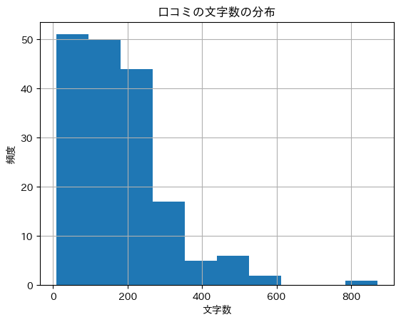
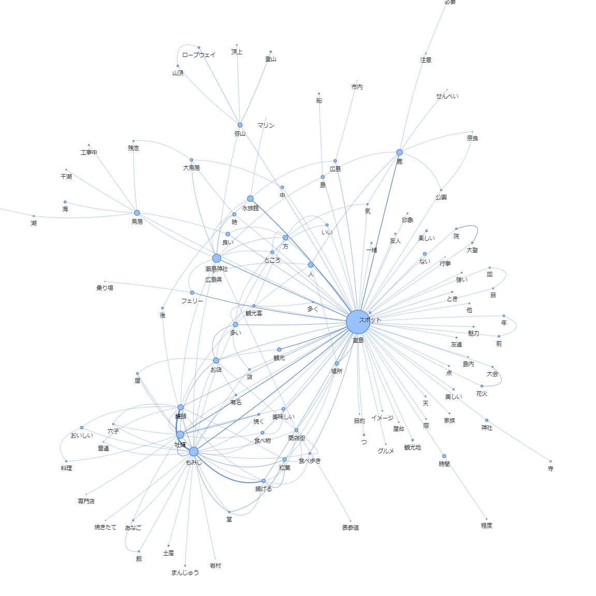

7. 観光データの分析#
今回のゴール
実データを用いて、テキストマイニングの応用的な分析を体験する
多様な分析視点からデータを読み解く力を身につける（「話題の発見」「関係性の把握」「感情から見る満足度」など）
自らテーマを設定し考察を行う演習を通して、データから社会的意義を導く力を身につける
7.1. データの確認#
宮島の口コミデータ
https://mayster8.github.io/nlp/data/miyajima_sample.csv
7.1.1. データの中身を確認#
miyajima_sample.csvを Google Colab に配置データ読み込み
プログラム
import pandas as pd
# 口コミデータの読み込み
df = pd.read_csv('miyajima_sample.csv', encoding='utf-8', parse_dates=['旅行の時期'])
df
出力
index |
居住地 |
年代 |
性別 |
旅行の時期 |
同行者 |
評価 |
タイトル |
口コミ |
|---|---|---|---|---|---|---|---|---|
0 |
広島 |
50代 |
男性 |
2021-10-01 00:00:00 |
家族 |
とても良い |
まあきてみんさい |
自然の景色 雅な社殿 ときめきいっぱいの商店街 海のにおい いいよお |
1 |
広島 |
30代 |
女性 |
2021-10-01 00:00:00 |
友達 |
とても良い |
魅力満載のワンダーアイランドです！ |
パワースポットでもある厳島神社を参拝したり、牡蠣やもみじ饅頭、穴子飯をはじめとしたグルメは有名で食べ歩きを楽しめます。また、カヤックや弥山登山などアクティビティも充実。おすすめは、商店街の裏路地を散策することです。商店街の賑やかさとはまた違う雰囲気で、落ち着いた雰囲気のカフェやレトロな文具店などがあり、ゆったりとした時間を過ごすことができます。和風旅館もあり、世界遺産の島に宿泊できる贅沢も味わえます。 |
7.1.2. 「データ数」「期間」の確認#
プログラム
print(len(df))
print(df["旅行の時期"].min())
print(df["旅行の時期"].max())
出力
176
2000-09-01 00:00:00
2021-10-01 00:00:00
7.1.3. 一つの投稿（口コミ）の文字数を確認#
プログラム
# 「口コミ」の文字数を表す列「口コミの文字数」を追加
df["口コミの文字数"] = df["口コミ"].str.len()
print(f"平均文字数：{df["口コミの文字数"].mean()}")
print(f"平均文字数：{df["口コミの文字数"].median()}")
print(f"平均文字数：{df["口コミの文字数"].min()}")
print(f"最大文字数：{df["口コミの文字数"].max()}")
df
出力
平均文字数：175.0909090909091
平均文字数：158.0
平均文字数：8
最大文字数：872
7.1.4. 「口コミの文字数」の分布を確認#
プログラム
!pip -q install japanize_matplotlib
import matplotlib.pyplot as plt
import japanize_matplotlib
df["口コミの文字数"] = df["口コミ"].str.len()
df["口コミの文字数"].mean()
df["口コミの文字数"].hist()
plt.title("口コミの文字数の分布")
plt.xlabel("文字数")
plt.ylabel("頻度")
plt.show()
出力

7.1.5. カテゴリカルデータの種類の確認#
プログラム
# カテゴリの確認（重複除く）
cat = "年代"
val = df[cat].unique().tolist()
# ソートして表示
print(f"{cat}： {sorted(val)}")
出力
年代： ['10代', '20代', '30代', '40代', '50代', '60代', '選択しない']
7.1.6. カテゴリカルデータの内訳の確認#
プログラム
# カテゴリの確認（重複除く）
cat = "年代"
val = df[cat].unique().tolist()
val = sorted(val)
for c in val:
print(f"{cat}_{c} ： {len(df[df[cat] == c])}")
出力
年代_10代 ： 30
年代_20代 ： 84
年代_30代 ： 20
年代_40代 ： 16
年代_50代 ： 17
年代_60代 ： 7
年代_選択しない ： 2
7.1.7. 欠損値の補完#
「評価」カテゴリに欠損（nan）がある
プログラム
cat = "評価"
val = df[cat].unique().tolist()
val
出力
['とても良い', '良い', '普通', '悪い', nan]
① 「評価」が「nan」のデータを表示
プログラム
df[df["評価"].isna()]
出力
index |
居住地 |
年代 |
性別 |
旅行の時期 |
同行者 |
評価 |
タイトル |
口コミ |
|---|---|---|---|---|---|---|---|---|
89 |
広島 |
20代 |
男性 |
2019-06-01 00:00:00 |
友達 |
NaN |
少し残念というのが正直な気持ち |
東京から来た友人と宮島へ観光に行きましたが、鳥居が保全工事中だったため、鳥居の大部分を見ることができませんでした。友人は楽しんでいましたが、やはり目玉の鳥居を見ることができなかったのは残念です。午後に食べた穴子飯は美味しかったです。友人はまた行きたいと言っていました。 |
② index=89 の「nan」のデータを書き換え
プログラム
df.loc[89, "評価"] = "欠損"
③ 修正後のデータを確認
プログラム
df.loc[[89]]
出力
index |
居住地 |
年代 |
性別 |
旅行の時期 |
同行者 |
評価 |
タイトル |
口コミ |
|---|---|---|---|---|---|---|---|---|
89 |
広島 |
20代 |
男性 |
2019-06-01 00:00:00 |
友達 |
欠損 |
少し残念というのが正直な気持ち |
東京から来た友人と宮島へ観光に行きましたが、鳥居が保全工事中だったため、鳥居の大部分を見ることができませんでした。友人は楽しんでいましたが、やはり目玉の鳥居を見ることができなかったのは残念です。午後に食べた穴子飯は美味しかったです。友人はまた行きたいと言っていました。 |
7.2. 基礎的な解析#
7.2.1. 語の出現頻度（集計）#
!pip -q install spacy ginza ja-ginza
プログラム
import spacy
import pandas as pd
from collections import Counter
nlp = spacy.load('ja_ginza')
# 口コミデータの読み込み
df = pd.read_csv('miyajima_sample.csv', encoding='utf-8', parse_dates=['旅行の時期'])
# 名詞・固有名詞・形容詞
target_pos = ("NOUN", "PROPN", "ADJ")
# ストップワード
stop_words = ["\n"]
# 単語リストを作成
all_terms = []
for text in df['口コミ']:
doc = nlp(text)
for token in doc:
if token.pos_ in target_pos and token.lemma_ not in stop_words:
all_terms.append(f"{token.lemma_}({token.pos_})")
# 頻度を集計
counter = Counter(all_terms)
top_words = counter.most_common(20)
top_words
出力
[('宮島(PROPN)', 209),
('こと(NOUN)', 148),
('もみじ(NOUN)', 79),
('お(NOUN)', 75),
('厳島神社(PROPN)', 74),
('牡蠣(NOUN)', 66),
('鹿(NOUN)', 52),
('お店(NOUN)', 48),
('饅頭(NOUN)', 47),
('鳥居(NOUN)', 46),
('人(NOUN)', 45),
('方(NOUN)', 42),
('多い(ADJ)', 41),
('ため(NOUN)', 40),
('水族館(NOUN)', 37),
('良い(ADJ)', 34),
('観光(NOUN)', 32),
('紅葉(NOUN)', 31),
('もの(NOUN)', 30),
('場所(NOUN)', 30)]
7.2.2. 語の出現頻度（ワードクラウド）#
!apt-get -q -y install fonts-ipaexfont
プログラム
# ワードクラウド
import spacy
from collections import Counter
from wordcloud import WordCloud
import matplotlib.pyplot as plt
import os
from matplotlib import font_manager
nlp = spacy.load("ja_ginza")
df = pd.read_csv('miyajima_sample.csv', encoding='utf-8', parse_dates=['旅行の時期'])
texts = df["口コミ"].to_list()
# texts = df["タイトル"].to_list()
# 名詞・固有名詞・形容詞
target_pos = ("NOUN", "PROPN", "ADJ")
# ストップワード
stop_words = ["\n"]
# 単語リストを作成
all_terms = []
for text in texts:
# 改行文字（"\n","\r\n"等）を一括で除去。ワードクラウドでは改行文字はエラーとなるため
text = "".join(text.splitlines())
doc = nlp(text)
for token in doc:
if token.pos_ in target_pos and token.lemma_ not in stop_words:
all_terms.append(token.lemma_)
# 頻度を集計
counter = Counter(all_terms)
freq_dict = {}
for term, cnt in counter.items():
freq_dict[term] = cnt
jp_font_path = "/usr/share/fonts/opentype/ipaexfont-gothic/ipaexg.ttf"
# WordCloud の生成
wc = WordCloud(
width=800,
height=400,
background_color="white",
font_path=jp_font_path,
# max_words=100,
random_state=0
)
wc = wc.generate_from_frequencies(freq_dict)
# 表示
plt.imshow(wc, interpolation="bilinear")
plt.axis("off")
plt.tight_layout()
plt.show()
出力
7.2.3. 共起ネットワーク（語の関係性・文脈）#
!pip -q install pyvis japanize_matplotlib
プログラム
# ==== ネットワーク描画用の関数群 ====
def extract_words(sent, pos_tags, stopwords):
words = []
for token in sent:
if token.pos_ in pos_tags and token.lemma_ not in stopwords:
words.append(token.lemma_)
return words
from sklearn.feature_extraction.text import CountVectorizer
import numpy as np
def count_cooccurrence(sents, token_length='{2,}'):
token_pattern=f'\\b\\w{token_length}\\b'
count_model = CountVectorizer(token_pattern=token_pattern)
X = count_model.fit_transform(sents)
words = count_model.get_feature_names_out()
word_counts = np.asarray(X.sum(axis=0)).reshape(-1)
X[X > 0] = 1
Xc = (X.T * X)
return words, word_counts, Xc, X
def word_weights(words, word_counts):
count_max = word_counts.max()
weights = []
for word, count in zip(words, word_counts):
weights.append((word, {'weight': count / count_max}))
return weights
def cooccurrence_weights(words, Xc, weight_cutoff):
Xc_max = Xc.max()
cutoff = weight_cutoff * Xc_max
weights = []
for i, j in zip(*Xc.nonzero()):
if i < j and Xc[i,j] > cutoff:
weights.append((words[i], words[j], Xc[i,j] / Xc_max))
return weights
import networkx as nx
from pyvis.network import Network
import matplotlib.pyplot as plt
import japanize_matplotlib
def create_network(words, word_counts, Xc, weight_cutoff):
G = nx.Graph()
weights_w = word_weights(words, word_counts)
G.add_nodes_from(weights_w)
weights_c = cooccurrence_weights(words, Xc, weight_cutoff)
G.add_weighted_edges_from(weights_c)
G.remove_nodes_from(list(nx.isolates(G)))
return G
def pyplot_network(G):
plt.figure(figsize=(10, 10))
pos = nx.spring_layout(G, k=0.1)
weights_n = np.array(list(nx.get_node_attributes(G, 'weight').values()))
nx.draw_networkx_nodes(G, pos, node_size=300 * weights_n)
weights_e = np.array(list(nx.get_edge_attributes(G, 'weight').values()))
nx.draw_networkx_edges(G, pos, width=20 * weights_e)
nx.draw_networkx_labels(G, pos, font_family='IPAexGothic')
plt.axis("off")
plt.show()
def nx2pyvis_G(G):
pyvis_G = Network(width='800px', height='800px', notebook=True, cdn_resources="in_line")
for node, attrs in G.nodes(data=True):
pyvis_G.add_node(node, title=node, size=30 * attrs['weight'])
for node1, node2, attrs in G.edges(data=True):
pyvis_G.add_edge(node1, node2, width=20 * attrs['weight'])
return pyvis_G
import spacy
import pandas as pd
from IPython.display import HTML
# 口コミデータの読み込み
df = pd.read_csv("miyajima_sample.csv", encoding="utf-8", parse_dates=["旅行の時期"])
nlp = spacy.load("ja_ginza")
# 品詞とストップワードの設定
target_pos = ("NOUN", "PROPN", "ADJ")
stop_words = ["\n", "こと", "お", "ため", "もの"]
# 口コミを解析し共起を算出
sents = []
for doc in nlp.pipe(df['口コミ']):
for sent in doc.sents:
sents.append(' '.join(extract_words(sent, target_pos, stop_words)))
words, word_counts, Xc, X = count_cooccurrence(sents, token_length='{1,}')
# ネットワークの生成（グラフが密になる場合は、パラメータを大きくする）
G = create_network(words, word_counts, Xc, 0.015)
# 動的ネットワークの描画
net = nx2pyvis_G(G)
net.show('network_miyajima.html')
# Colabで可視化
net.prep_notebook()
html = net.generate_html()
display(HTML(html))
出力

7.3. 発展的な分析#
7.3.1. クラスタリング（分類・話題抽出）#
プログラム
# K-means
import spacy
from sklearn.feature_extraction.text import TfidfVectorizer
from sklearn.cluster import KMeans
import pandas as pd
# GiNZAの日本語モデルをロード
nlp = spacy.load("ja_ginza")
# 対象文書
df = pd.read_csv('miyajima_sample.csv', encoding='utf-8', parse_dates=['旅行の時期'])
texts = df["口コミ"].to_list()
# 形態素解析：名詞・固有名詞
target_pos = ("NOUN", "PROPN")
# stop_words = ["\n"]
stop_words = ["\n", "こと", "お", "ため", "もの"]
processed = []
for text in texts:
doc = nlp(text)
terms = []
for token in doc:
if token.pos_ in target_pos and token.lemma_ not in stop_words:
terms.append(token.lemma_)
processed.append(" ".join(terms))
# TF-IDFを計算
def split_by_space(text):
return text.split() # 空白で分割してリストにする
vectorizer = TfidfVectorizer(tokenizer=split_by_space, token_pattern=None, lowercase=False)
X = vectorizer.fit_transform(processed)
# TF-IDFをDataFrame化
df_tfidf = pd.DataFrame(X.toarray(), columns=vectorizer.get_feature_names_out())
doc_ids = []
for i in range(len(texts)):
doc_ids.append(f"D{i+1}")
df_tfidf.index = doc_ids
# TF-IDFの値
# print("＜TF-IDF＞")
# print(df_tfidf)
# K-meansクラスタリング
K=5
kmeans = KMeans(n_clusters=K, random_state=0)
labels = kmeans.fit_predict(X)
# 文書ごとのクラスタを表示（DataFrameで保存）
df_result = pd.DataFrame({
"文書ID": doc_ids,
"文書": texts,
"クラスタ": labels
})
# クラスタリング結果
# print("\n＜クラスタリング結果＞")
# print(df_result)
# クラスタ内訳
for i in range(K):
cluster_size = len(df_result[df_result["クラスタ"] == i])
print(f"クラスタ {i}: {cluster_size}件")
# 補足：各クラスタの代表語を表示
terms = vectorizer.get_feature_names_out()
order_centroids = kmeans.cluster_centers_.argsort()[:, ::-1]
print("\n＜各クラスタの上位語＞")
for i in range(K):
top_terms = []
for ind in order_centroids[i, :10]:
top_terms.append(terms[ind])
print(f"クラスタ {i}: {', '.join(top_terms)}")
出力
クラスタ 0: 37件
クラスタ 1: 22件
クラスタ 2: 42件
クラスタ 3: 35件
クラスタ 4: 40件
＜各クラスタの上位語＞
クラスタ 0: 水族館, 宮島, シカ, 饅頭, もみじ, バーベキュー, 天, 弥山, コース, 観光地
クラスタ 1: 揚げる, もみじ, 紅葉, 宮島, 饅頭, 秋, 際, 普通, 場所, 方
クラスタ 2: 厳島神社, 宮島, 花火, 時間, 時, 方, 大鳥居, 鳥居, 夜, 水族館
クラスタ 3: 鹿, 宮島, ところ, 食べ物, 場所, 観光客, 店, 神社, 人, 気
クラスタ 4: 牡蠣, お店, 宮島, 観光, もみじ, 饅頭, 焼く, 鳥居, 友人, 場所
7.3.1.1. 指定したクラスタの口コミ#
プログラム
no = 0
df_result[df_result["クラスタ"] == no]
出力
index |
文書ID |
文書 |
クラスタ |
|---|---|---|---|
4 |
D5 |
試験の帰りに宮島へ寄りました。フェリーから降りてすぐに昼食をとろうとなり、商店街を歩きました。簡単に食べるものを何個か食べたかったため、サンドdeおにぎりのお子様ランチをたべました。椅子がなかったので海沿いのベンチで食べたんですが、シカが二頭ほど寄ってきたので気を付けたほうが良いです。あと、ごみ箱が簡単に見つけれないため、あらかじめ確認してものを食べるのをお勧めします。昼食の後はみやじマリン水族館へ行きました。道のりが遠く、夏だと汗がでるため水分をしっかりと商店街で買いました。水族館に行った後は再び商店街に戻り、かき氷とにぎり天を食べました。最後に紅葉堂で3つもみじ饅頭を買い、夕方前にフェリーで帰りました。 |
0 |
5 |
D6 |
お昼にサンドdeおにぎりを食べた。友達がお子様ランチのおにぎりを食べていておいしそうだった。外で食べていたのでシカに食べられないようにするのが大変だった。シカからはとても獣の臭いがした。この日も大鳥居は工事していた。いつまでやるのかはわからないが、早く工事が終わってほしい。その後、宮島の水族館に行った。意外と遠くて足がとても疲れた。そのあと無事に帰ったが、足が痛いので水族館には当分行かないと思う。 |
0 |
10 |
D11 |
宮島の弥山に登るため、今回は初めて大元コースに挑戦しました。まず厳島神社に参拝した後、宮島水族館を右手に見ながら、大元公園に到着。大元公園を起点とする大元コースで、弥山山頂を目指しました。このコースは弥山登山の３つのコースのうち、最も上級者向けと言われています。紅葉谷コースと大聖院コースは何度か登ったことがありますが、今回の大元コースは初挑戦でした。登山道のすぐそばを清流が流れ、巨石と奇岩が多く見られるこのコースは、他の２つのコースよりも自然豊かで、チャレンジしがいがありました。次回は、紅葉の頃にまた訪れたいと思います。 |
0 |
22 |
D23 |
ゴミ箱が無かった |
0 |
25 |
D26 |
自然が好きな人は本当に良かったです！ |
0 |
27 |
D28 |
工事中で何も見れなかった。 |
0 |
7.3.2. 感情分析（ポジネガ）#
!pip -q install transformers sentencepiece
!pip -q install -U torch torchvision torchaudio
上記、エラーが出る場合はセッションを再起動して再度試してみる
プログラム
import pandas as pd
from transformers import AutoTokenizer, AutoModelForSequenceClassification, TextClassificationPipeline
from tqdm import tqdm
# モデルの読み込み
model_id = "cardiffnlp/twitter-xlm-roberta-base-sentiment"
tok = AutoTokenizer.from_pretrained(model_id)
mdl = AutoModelForSequenceClassification.from_pretrained(model_id)
# パイプライン作成
pipe = TextClassificationPipeline(
task="sentiment-analysis",
tokenizer=tok,
model=mdl,
top_k=None,
truncation=True,
max_length=512
)
df = pd.read_csv('miyajima_sample.csv', encoding='utf-8', parse_dates=['旅行の時期'])
texts = df["口コミ"].to_list()
# 推論とDataFrame化
rows = []
for t in tqdm(texts):
results = pipe(t)[0] # 各ラベルごとのスコア
row = {"文章": t}
for r in results:
label = r["label"]
score = round(float(r["score"]), 3)
row[label] = score
rows.append(row)
df = pd.DataFrame(rows)
df
出力
index |
文章 |
positive |
neutral |
negative |
|---|---|---|---|---|
0 |
自然の景色 雅な社殿 ときめきいっぱいの商店街 海のにおい いいよお |
0.779 |
0.173 |
0.048 |
1 |
パワースポットでもある厳島神社を参拝したり、牡蠣やもみじ饅頭、穴子飯をはじめとしたグルメは有名で食べ歩きを楽しめます。また、カヤックや弥山登山などアクティビティも充実。おすすめは、商店街の裏路地を散策することです。商店街の賑やかさとはまた違う雰囲気で、落ち着いた雰囲気のカフェやレトロな文具店などがあり、ゆったりとした時間を過ごすことができます。和風旅館もあり、世界遺産の島に宿泊できる贅沢も味わえます。 |
0.775 |
0.199 |
0.026 |
2 |
宮島のグルメを楽しむために母と訪問しました。昼食は、牡蠣屋という牡蠣料理専門店で牡蠣屋定食をいただきました。牡蠣屋定食は、焼き牡蠣、カキフライ、牡蠣飯など、牡蠣料理を一通り楽しむことができます。昼食を食べたあとは、厳島神社と鳥居を眺めてから、GEBURAというレモンを使ったカクテルやジュースが楽しめるお店に行きました。美味しいし、200円でおかわりもできるのでお勧めです。 |
0.739 |
0.23 |
0.03 |
3 |
牡蠣好きには堪らないです！！ |
0.214 |
0.136 |
0.65 |
7.3.2.1. ポジネガ平均#
プログラム
print(f"ポジティブ平均：{df["positive"].mean()}")
print(f"ネガティブ平均：{df["negative"].mean()}")
出力
ポジティブ平均：0.5942613636363636
ネガティブ平均：0.1769318181818182
7.3.2.2. ポジティブ値が上位の投稿#
プログラム
df.sort_values("positive", ascending=False)
出力
index |
文章 |
positive |
neutral |
negative |
|---|---|---|---|---|
25 |
自然が好きな人は本当に良かったです！ |
0.93 |
0.051 |
0.019 |
162 |
とてもいいところでした。 |
0.926 |
0.055 |
0.019 |
56 |
広島産の牡蠣をとことん満喫できました。お酒にも合い，牡蠣づくしなのにリーズナブルで，お洒落なお店でした。レモンジュースもフレッシュで美味しかったです。 |
0.918 |
0.067 |
0.014 |
90 |
宮島に2019年に訪れましたが、建造物やその他の歴史的なものが沢山あり、とても満喫できました！ |
0.91 |
0.074 |
0.016 |
42 |
もうなくなってしまいましたが、宮島の花火大会は広島の花火大会の中で一番センスが良く、世界遺産とのコラボレーションが感動ものでした。 |
0.903 |
0.068 |
0.029 |
174 |
シカが可愛かった❤ |
0.898 |
0.079 |
0.023 |
17 |
お寺などを見たりしてとても充実した時間を過ごすことが出来ました |
0.897 |
0.088 |
0.015 |
169 |
宮島口からフェリーに乗り宮島に着きました。日本人より外国の方々の方が多くビックリしました。島には世界遺産の厳島神社やお土産物屋さんがあり楽しめました。よかったです。 |
0.896 |
0.069 |
0.035 |